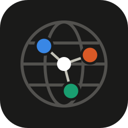

Country:
Not on the map
Tor, I2P and CJDNS peers have no location. Inbound IPv6 on umbrelOS arrives through docker-proxy and shows up as a private address.
| Network | Manual | Inbound | Outbound |
|---|

Loading peers…
Tor, I2P and CJDNS peers have no location. Inbound IPv6 on umbrelOS arrives through docker-proxy and shows up as a private address.
| Network | Manual | Inbound | Outbound |
|---|